算法（1）
算法笔记
认识时间复杂度
我们有一些操作是常数时间完成的：
int a =arr[i]; 因为我们直接计算偏移量直接取出的
但是这个不是
int t=list.get(i);//链表 因为链表必须遍历，才能找到元素
以及加减乘除的操作是常数操作。
总而言之：涉及到数据量的操作都是非常数操作
举个例子，选择排序：这个排序是一种选择某一个数与前面已经排好的数组开始对比。怎么保证前面的已经有序了呢？我们把算法作用在第一个元素上，这个时候那他与第二个元素排序，成功后就是一个有序小数组，这样就满足了递归的条件：
//Part I:C version without recurssion
#include <stdio.h>
#include<stdlib.h>
#include<time.h>
#include<windows.h>
//using Choose sort to sort the array
//rand num getter
int getRandNum(int maxRange)
{
srand((unsigned int)clock());
Sleep(10);
return rand()% maxRange;
}
void printCurrentArray(int* array,int arraySize)
{
printf("Current array is shown:\n");
for(int i=0; i<arraySize; i++)
{
printf("%d ",array[i]);
}
printf("\n");
}
void swapInt(int* e1, int* e2)
{
int temp=*e1;
*e1=*e2;
*e2=temp;
}
int main()
{
//get a rand array
int arr[10]={0};
for(int i=0; i<10; i++)
{
arr[i]= getRandNum(100);
}
//Sort starts!
for(int i=1; i<10; i++)
{
//from the second one
//Compared with the previous one and the front one
for(int j=i;j>0;j--)
{
//If inverted,invert them back
if(arr[j]<arr[j-1])
{
swapInt(&arr[j], &arr[j - 1]);
}
}
//Target the Current Key and show:
printf("Current key is:%d\n",arr[i]);
printCurrentArray(arr,10);
printf("Enter the newline to go forward!");
getchar();
}
printf("Eventually...\n");
printCurrentArray(arr,10);
}//Or Recussion type
#define _CRT_SECURE_NO_WARNINGS 1
#include<windows.h>
#include <stdio.h>
#include<stdlib.h>
#include<time.h>
//using Choose sort to sort the array
//rand num getter
int getRandNum(int maxRange)
{
srand((unsigned int)clock());
Sleep(10);
return rand() % maxRange;
}
void printCurrentArray(int* array, int arraySize)
{
printf("Current array is shown:\n");
for (int i = 0; i < arraySize; i++)
{
printf("%d ", array[i]);
}
printf("\n");
}
void swapInt(int* e1, int* e2)
{
int temp = *e1;
*e1 = *e2;
*e2 = temp;
}
void insertSort(int* array, int arraySize, int cur_sort_place)
{
if (cur_sort_place > arraySize-1)
return;
int j = cur_sort_place;
while (j > 0)
{
if (array[j] < array[j - 1])
swapInt(&array[j], &array[j - 1]);
j--;
}
choiceSort(array, arraySize, cur_sort_place + 1);
}
int main()
{
int arr[10] = { 0 };
for (int i = 0; i < 10; i++)
{
arr[i] = getRandNum(100);
}
insertSort(arr, 10, 1);
printCurrentArray(arr, 10);
} 这个算法的时间复杂度就是O($N^2$)，这是因为操作表达式的最高阶是$N^2$.
注意到O(N)表达的是表达式的最高此项，是衡量巨大数量下算法的优良度
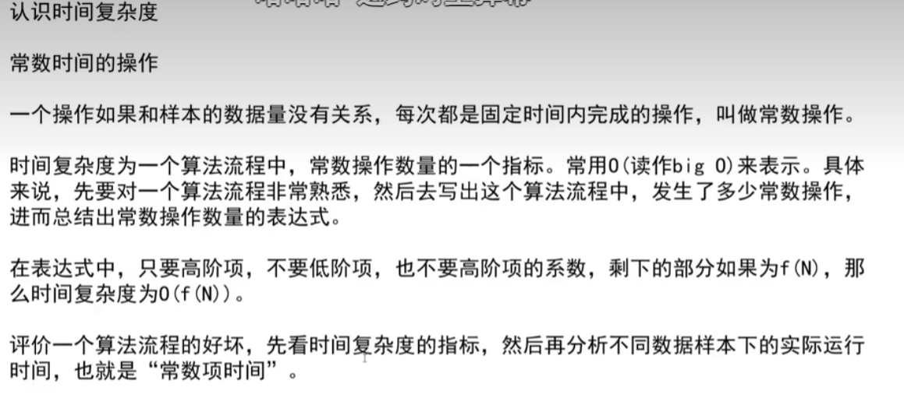
当时间复杂度相同时，通过==比较常数项==作出判断是否可靠。更多的时候我们选择直接开跑看看怎么样：
public static void Process1()
{
int N=1000;
int a=1;
for(int i=0 ; i<N; i++)
{
a*=10;
a=a+10;
a=6127*9876;
}
}
public static void Process2()
{
int N=1000;
int a=1;
for(int i=0 ; i<N; i++)
{
a=10|1;
a^=10;
a=a&9876;
}
} 对，就是这种。
选择排序
回顾上面的实例代码：我们使用Java写出另一个版本：
public static void seletionSort(int[] array){
if(arr==null&&arr.length<2)
{
return;
}
for(int i=0;i<arr.length-1;i++)
{
int minIndex=i;
for(int j=i+1;j<arr.length;j++)
{
minIndex=arr[j]<arr[minIndex]?j:minIndex;//直接找到最小的地方
}
swap(arr,i,minIndex);//Using in swap minindex with arr[i]
}
}冒泡排序
我们也可以使用冒泡排序排数，就像大的泡泡向下沉，小的泡泡向上浮。就好了。值得注意的是，我们换完产生的最值区已经换好了，没有必要再参与排序。
for(int i=0;i<N-1;i++)
{
for(int j=0;j<N-i;j++)
{
if(conditions)
swap data;
}
}交换的离奇写法
请看这个
public static void swap(int[] arr, int i, int j)
{
arr[i]=arr[i]^arr[j];
arr[j]=arr[i]^arr[j];
arr[i]=arr[i]^arr[j];
}异或：相同为0，不同为1：
例如：
A:1011110101001
B:1000101011001
A^B: 0011011110000
也可以理解为无进位相加：
性质1：0^N=N,N^N=0
性质2：满足交换律和结合律
那这是怎么交换的？
a=a^b 1)
b=a^b
a=a^b
假设a= A,b=B;
1)a=A^B b=B
2)a=A^B,b=(A^B)^B =A^(B^B)=A
3)a=A^B^A=B b=A
交换完毕
但是注意：这样的方法不适用于同一块内存，否则会洗成0.
例题：1）现在有一个整型数组：里面有诺干出现了偶数次的数和一个出现奇数次的数，找出那个奇数次数的数：
EG：[2,1,3,1,3,1,3,2,1]——->3
Solutions：
int ero=0;
for(int i=0;i<arr.length;i++)
{
ero^=arr[i];
}
printf("%d ",ero); 这是因为异或顺序无关，偶数次数的全消成了0.于是可以引用在奇偶相关次序无关的题目。
2）现在有一个整型数组：里面有诺干出现了偶数次的数和两个出现奇数次的数，找出那两个奇数次数的数：
Ok，当我们依旧沿袭上面的方法的时候，我们发现：eor=a^b,这是因为一切出现了偶数次的异或为0，a和b也最后削成一个a^b。下面怎么办？
注意到a$\neq$b，这样的话：因为最右边的1是a,b作为二进制的特征数（用它来区分a,b），我们就可以提取出来：int rightOne=eor&(~eor+1)，也就是源码与上补码，提取eor上的第右边的1，随后只与这个位置上是1的数，就得到a或者是b了
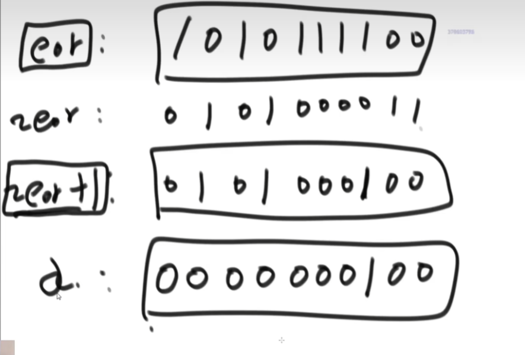
public static void printOddTimeNum2(int[] arr)
{
int eor=0;
for(int i=0;i<num)
{
eor^arr[i];
}
int rightOne=eor&(~eor+1);//找出来最右边的数
int onlyOne=0;//eor'
for(int cur:arr)
{
if((cur&rightOne)==0)//别写1，因为出来的只能是0或者是rightOne，如果想要另一个就!=0;
onlyOne^=cur;
}
System.out.printIn(onlyOne+" "+(ero^onlyOne));
}插入排序
这个就是最上面的代码，就是相当于插牌。这个算法的表现是波动较大的：O(N)~O($N^2$)。
但是算法的复杂度是看最差情况的，所以是O($N^2$).
public class Solution{
public static void insertSort(int[] arr)
{
if(arr==null&&arr.length<2)
{
return;
}
for(int i=1;i<arr.length;i++)
{
for(int j=i-1; j>=0&&arr[j]>arr[j+1];j--)
{
swap(arr,j,j+1);
}
}
}
public static void swap(...)
{
//...
}
}二分查找法
注意，这个只使用于有序数组。这个数组使用二分查找是最快的。主要思想：找中间，比大小，挪边界，继续二分。这个算法的复杂度因此是$O(\log n)$.
对数器
假设我们要进行测试方法A，我们使用随机样本产生器，我们随机的产生数据放到多个方法，他们结果要是不一样，那要不就是A错，要不就是B错，要不就是都错了。这个时候人工干预的方式修改方法。
递归行为下时间复杂度的计算
求取中点的方法
int mid=L+((R-L)>>1); 为什么这样书写：防止R+L溢出int上限、
使用递归求解数组最大值：
public class Solution{
public static int getMax(int[] arr)
{
return process(arr,0,arr.length-1);
}
public static int process(int[] arr, int L ,int R){
if(L==R)
return;
int mid=L+((R-L)>>1);
int leftMax=process(arr,L,mid);
int rightMax=process(arr,mid+1,R);
return Math.max(leftMax,rightMax);
}
}这个写法我们是在二分类是常用的：先处理递归左边，再递归处理右边，最后从小到大的返回各层的最大值，最后得到整体的最大值。下面也有C++版本的
#include<iostream>
#include<vector>
#include<Windows.h>
class Finder {
public:
int getMax(std::vector<int> s) {
return Dofindmax(s, 0, s.size()-1);
}
int Dofindmax(std::vector<int> s, int left, int right)
{
if (left == right)
return s[left];
int mid = left + ((right - left) >> 1);
int leftMax = Dofindmax(s, left, mid);
int rightMax = Dofindmax(s, mid + 1, right);
return leftMax > rightMax ? leftMax : rightMax;
}
};
void PrintVector(std::vector<int> s)
{
for (std::vector<int>::iterator it = s.begin(); it != s.end(); it++)
std::cout << *it << " ";
std::cout<<std::endl;
}
int getRandNum()
{
srand((unsigned int)clock());
Sleep(10);
return rand() % 100;
}
int main()
{
std::vector<int> s;
for (int i = 0; i < 10; i++)
s.push_back(getRandNum());
PrintVector(s);
Finder f;
int t = f.getMax(s);
std::cout << t;
}当然，别太常用，因为容易把栈搞炸
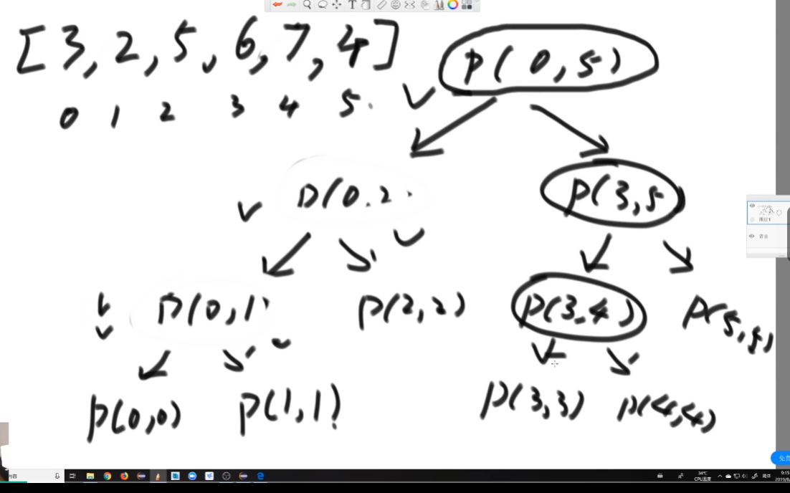
画个递归树
Master公式
有人话版本吗？有的：就是说我们的一次递归可以拆分一个问题为b个子问题，当然右额外开销$N^d$,这样，我们就有分层级讨论：比较$\log_ba$与d的大小从而一步写出公式。
以上面为例：上面的问题把问题拆成两个子问题：b=2,并且在单个函数体内调用了两次：a=2,剩下的时间复杂度为O(1).这下，我们的公式就是：
这样就直接带入公式:T(N)=O(logn).
补充Reading
平时设计或者阅读一个算法的时候，必然会提到算法的复杂度（包括时间复杂度和空间复杂度）。比如我们说一个二分查找算法的平均时间复杂度为 O(log n)，快速排序可能是 O(n log n)。那这里的 O 是什么意思？这样的表达是否准确呢？
今天来复习一下与算法复杂度相关的知识：函数渐进阶，记号 O、Ω、θ和 o；Master 定理。
先插一句，在算法复杂度分析中，log 通常表示以 2 为底的对数。
算法复杂度（算法复杂性）是用来衡量算法运行所需要的计算机资源（时间、空间）的量。通常我们利用渐进性态来描述算法的复杂度。
用 n 表示问题的规模，T(n) 表示某个给定算法的复杂度。所谓渐进性态就是令 n→∞ 时，T(n) 中增长最快的那部分。严格的定义是：如果存在 $T’(n)$，当 n→∞ 时，有:
我们就说$T’(n)$是 T(n) 当 n→∞ 时的渐进性态。
比如 T(n) = 2 n ^ 2 + n log n + 3，那么显然它的渐进性态是 2 n ^ 2，因为当 n→∞ 时，后两项的增长速度要慢的多，可以忽略掉。引入渐进性态是为了简化算法复杂度的表达式，只考虑其中的主要因素。当比较两个算法复杂度的时候，如果他们的渐进复杂度的阶不相同，那只需要比较彼此的阶（忽略常数系数）就可以了。
总之，分析算法复杂度的时候，并不用严格演算出一个具体的公式，而是只需要分析当问题规模充分大的时候，复杂度在渐进意义下的阶。记号 O、Ω、θ和 o 可以帮助我们了解函数渐进阶的大小。
假设有两个函数 f(n) 和 g(n)，都是定义在正整数集上的正函数。上述四个记号的含义分别是：
- f(n) = O(g(n))：$∃c>0,n_0∈N,∀n≥n_0,f(n)≤cg(n)$；f 的阶不高于 g 的阶。
- f(n) = Ω(g(n))：$∃c>0,n_0∈N,∀n≥n_0,f(n)≥cg(n)$；f 的阶不低于 g 的阶。
- f(n) = θ(g(n))：⟺$f(n)=O(g(n))\&\&f(n)=Ω(g(n))$；f 的阶等于 g 的阶。
- f(n) = o(g(n))：$∀\varepsilon>0,∃n_0∈N,∀n≥n_0,f(n)/g(n)<\varepsilon$；f 的阶低于 g 的阶。
可见，记号 O 给出了函数 f(n) 在渐进意义下的上界（但不一定是最小的），相反，记号Ω给出的是下界（不一定是最大的）。如果上界与下界相同，表示 f(n) 和 g(n) 在渐进意义下是同阶的（θ），亦即复杂度一样。
列举一些常见的函数之间的渐进阶的关系：
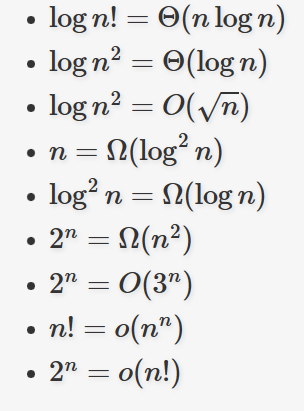
有些人可能会把这几个记号跟算法的最坏、最好、平均情况复杂度混淆，它们有区别，也有一定的联系。
即使问题的规模相同，随着输入数据本身属性的不同，算法的处理时间也可能会不同。于是就有了最坏情况、最好情况和平均情况下算法复杂度的区别。它们从不同的角度反映了算法的效率，各有用处，也各有局限。
有时候也可以利用最坏情况、最好情况下算法复杂度来粗略地估计算法的性能。比如某个算法在最坏情况下时间复杂度为θ(n ^ 2)，最好情况下为θ(n)，那这个算法的复杂度一定是 O(n ^ 2)、Ω(n) 的。也就是说 n ^ 2 是该算法复杂度的上界，n 是其下界。
接下来看看 Master 定理。
有些算法在处理一个较大规模的问题时，往往会把问题拆分成几个子问题，对其中的一个或多个问题递归地处理，并在分治之前或之后进行一些预处理、汇总处理。这时候我们可以得到关于这个算法复杂度的一个递推方程，求解此方程便能得到算法的复杂度。其中很常见的一种递推方程就是这样的：
设常数 a >= 1，b > 1，f(n) 为函数，T(n) 为非负整数，T(n) = a T(n / b) + f(n)，则有：

比如常见的二分查找算法，时间复杂度的递推方程为 T(n) = T(n / 2) + θ(1)，显然有 $n^{\log _b^a}=n^0=Θ(1)$，满足 Master 定理第二条，可以得到其时间复杂度为 T(n) = θ(log n)。
再看一个例子，T(n) = 9 T(n / 3) + n，可知 $n^{\log_b^a}=n^2$，令ε取 1，显然满足 Master 定理第一条，可以得到 T(n) = θ(n ^ 2)。
来一个稍微复杂一点儿例子，T(n) = 3 T(n / 4) + n log n。$n^{\log_b^a}=O(n^{0.793})$，取ε = 0.2，显然当 c = 3 / 4 时，对于充分大的 n 可以满足 a f(n / b) = 3 (n / 4) log(n / 4) <= (3 / 4) n log n = c f(n)，符合 Master 定理第三条，因此求得 T(n) = θ(n log n)。
运用 Master 定理的时候，有一点一定要特别注意，就是第一条和第三条中的ε必须大于零。如果无法找到大于零的ε，就不能使用这两条规则。
举个例子，T(n) = 2 T(n / 2) + n log n。可知 $n^{\log_b^a}=n$，而 f(n) = n log n，显然不满足 Master 定理第二条。但对于第一条和第三条，也无法找到大于零的ε使得 nlogn=O$(n^{1−\varepsilon})$ 或者Ω$(n^{1−\varepsilon})$，因此不能用 Master 定理求解，只能寻求别的方式求解。比如可以利用递归树求出该算法的复杂度为 $T(n)=O(n\log^2n)$。简单的说一下计算过程：
递归树的建立过程，就像是模拟算法的递推过程。树根对应的是输入的规模为 n 的问题，在递归处理子问题之外，还需要 n log n 的处理时间。然后根据递推公式给根节点添加子节点，每个子节点对应一个子问题。这里需要两个子节点，每个节点处理规模为 n / 2 的问题，分别需要 (n / 2) log(n / 2) 的时间。因此在第二层一共需要 n (log n - 1) 的时间。第三层节点就是将第二层的两个节点继续分裂开，得到四个各需要 (n / 4) log(n / 4) 时间的节点，总的时间消耗为 n (log n - 2)。依此类推，第 k（设树根为 k = 0）层有 2 ^ k 的节点，总的时间为 n * (log n - k)。而且可以知道，这棵树总共有 log n 层（最后一层每个节点只处理规模为 1 的子问题，无须再分治）。最后将每一层消耗的时间累加起来，得到：
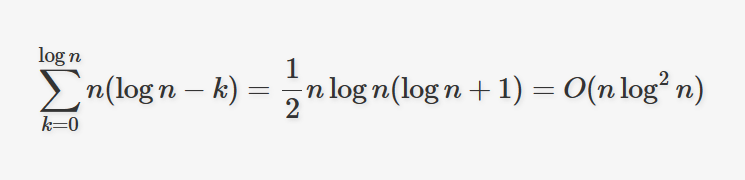
归并排序（MergeSort）
1）整体就很简单，就是一个简单的递归，左边排好序，右边排好序，然后整体就有序。
2）让其整体有序的方式用了排外序方法
3）继续使用master公式求解:$O(N\log N)$，空间复杂度O(N)
4）归并排序的实质
思路
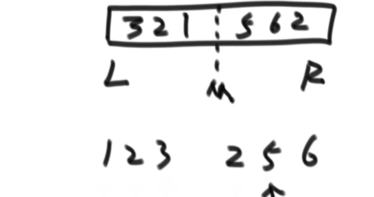
对于一块区域，我们使用指针访问：左右双指针法。开辟一块小空间，如果左边的大于右边的，左边指针拷贝同时指针后移一个，右边大于左边的同理。
public class Solution{
public static void mergeSort(int[] arr)
{
if(arr==null||arr.length<2)
return;
process(arr,0,arr.length-1);
}
public static void process(int[] arr,int L, int R)
{
if(L==R)
return;
int mid = left + ((right - left) >> 1);
process(arr,L,mid);
process(arr,mid+1,R);
merge(arr,L,mid,R);
}
public static void merge(int[] arr,int L,int M,int R){
int[] helpSort=new int[R-L+1];//这是辅助空间
int i=0;
int p1=L;
int p2=M+1;//划分区域
while(p1<=M&&p2<=R){
helpSort[i++]=arr[p1]<=arr[p2]?arr[p1++]:arr[p2++];
}
while(p1<=M){
helpSort[i++]=arr[p1++];
}
while(p2<=R){
helpSort[i++]=arr[p2++];
}
for(i=0;i<helpSort.length;i++){
arr[L+i]=helpSort[i];
}
}
}C++:
#include<iostream>
using namespace std;
void Merge(int arr[],int low,int mid,int high){
//low为第1有序区的第1个元素，i指向第1个元素, mid为第1有序区的最后1个元素
int i=low,j=mid+1,k=0; //mid+1为第2有序区第1个元素，j指向第1个元素
int *temp=new(nothrow) int[high-low+1]; //temp数组暂存合并的有序序列
if(!temp){ //内存分配失败
cout<<"error";
return;
}
while(i<=mid&&j<=high){
if(arr[i]<=arr[j]) //较小的先存入temp中
temp[k++]=arr[i++];
else
temp[k++]=arr[j++];
}
while(i<=mid)//若比较完之后，第一个有序区仍有剩余，则直接复制到t数组中
temp[k++]=arr[i++];
while(j<=high)//同上
temp[k++]=arr[j++];
for(i=low,k=0;i<=high;i++,k++)//将排好序的存回arr中low到high这区间
arr[i]=temp[k];
delete []temp;//删除指针，由于指向的是数组，必须用delete []
}
//用递归应用二路归并函数实现排序——分治法
void MergeSort(int arr[],int low,int high){
if(low<high){
int mid=(low+high)/2;
MergeSort(arr,low,mid);
MergeSort(arr,mid+1,high);
Merge(arr,low,mid,high);
}
}
int main(){
int a[10]={5,1,9,3,7,4,8,6,2,0};
MergeSort(a,0,9);
for(int i=0;i<10;i++)
cout<<a[i]<<" ";
return 0;扩展我们的归并排序问题
小和问题：对一个数组中，每个数左边比当前数小的数累加起来，叫做这个数的小和：请写一个程序：求解一个数组的小和。
Example:[1,3,4,2,5]产生的单个小和是[0,1,4,1,10],故数组的小和是16.
逆序问题：在一个数组中，左边的数如果比右边的数大，则这连哥哥数构成一个逆序对，请打印所有的逆序对。
（1）暴力解法是很简单的：对于位置i直接暴力遍历，但是$O(N^2)$
有没有更快的：有！
仔细思考一下：我们的小和可以这样产生！看一个数右边走，如果有别的数大于它就加一次这个数本身。如[1,3,4,2,5]：看1，右边四个数比他大，就加四次1，看3，右边两个数比他大，就加两个3，依次类推。。。
现在，我们对全数组进行二分。针对拆分后的数组一级一级使用我们新的求小和的过程，我们在比较的同时也排序：如：[1，3，4，2，5]下，拆分成2级[1,3,4]和[2,5]，然后又是:[1,3] [4] 和[2] [5]最后是:[1] [3] [4] [2] [5]，现在返回去合并：[1,3]产生小和1，[1,3,4]产生1个1，1个3，（左侧小，左侧加小和，左侧移动指针到下一个，于是产生）[2,5]合并产生一个2，之后再次合并产生一个1，一个3，一个4，现在完事了：1+1+1+3+2+1+3+4=16
这个算法为什么是O(NlogN),就是因为排序的时候不需要在暴力遍历之后才知道有几个数比当前的数小。这才省略了新的遍历。
可能不一样的是：在这题里面，我们必须在左右数字相等的时候先拷贝右边的，再拷贝左边的.
（2）类似的，仍可以使用mergeSort，也就是说，只要产生小和操作就是说明产生了逆序。我们只要统计这个就好了
荷兰国旗问题：指定一个数，比他大的放右边，小的放左边，但是注意空间复杂度O(1)
思路：我们把使用两个指针。把小于num的放到左边，与小于区的下一个数字直接交换就好了。这样小于区右扩，否则指针直接右移。
荷兰国旗问题（2）：指定一个数，比他大的放右边，小的放左边，相等的放中间。但是注意空间复杂度O(1)
还是类似，只不过有趣的是我们可以：
小于：[i]和小于区域的下一个交换，小于区东扩
相等：直接++
大于：[i]和大于区域的上一个交换，大于区西扩，但是i不动（我们还没排序那个交换过来的数嘞！）。
看看代码实现（看2就好了）
#include<stdio.h>
#include<stdlib.h>
void swap(int* e1, int* e2)
{
int temp = *e1;
*e1 = *e2;
*e2 = temp;
}
typedef struct Pair_ {
int pair1;
int pair2;
}Pair;
void arrangeArray(Pair* pair, int* arr, int arrsize,int sortnum)
{
if (!pair && !arr)
return;
if (arrsize < 0)
return;
int* smaller = &arr[-1];
int* bigger = &arr[10];
int* check = arr;
while (check < bigger)
{
if (*check < sortnum)
{
swap(check, smaller + 1);
check++;
smaller++;
}
else if (*check == sortnum)
{
check++;
}
else
{
swap(check, bigger - 1);
bigger--;
}
}
pair->pair1 = smaller - arr;
pair->pair2 = bigger - arr;
}
void PrintArr(int* arr, int arr_size)
{
for (int i = 0; i < arr_size; i++)
{
printf("%d ", arr[i]);
}
printf("\n");
}
int main()
{
int arr[10] = { 3,5,6,3,4,5,2,6,9,0 };
PrintArr(arr, 10);
Pair* p=(Pair*)malloc(sizeof(Pair));
p->pair1 = 0;
p->pair2 = 0;
arrangeArray(p, arr, 10, 5);
PrintArr(arr, 10);
printf("%d\n", arr[p->pair1]);
printf("%d\n", arr[p->pair2]);
} C++:
#include<iostream>
class Array {
public:
void initVal(int* arr, int size) {
int* arrayData = new int[size];
for (int i = 0; i < size; i++)
{
arrayData[i] = arr[i];
}
arraydata = arrayData;
arraysize = size;
}
void swapPartialData(int swap1,int swap2)
{
int temp = arraydata[swap1];
arraydata[swap1] = arraydata[swap2];
arraydata[swap2] = temp;
}
void arrangeandSort(int sortnum)
{
int smaller = -1;
int bigger = arraysize;
int check = 0;
while (check < bigger)
{
if (arraydata[check] < sortnum)
{
swapPartialData(check, smaller + 1);
check++;
smaller++;
}
else if (arraydata[check] == sortnum)
{
check++;
}
else
{
swapPartialData(check, bigger - 1);
bigger--;
}
}
}
void PrintVal()
{
for (int i = 0; i < arraysize; i++)
{
std::cout << arraydata[i] << " ";
}
std::cout << std::endl;
}
private:
int* arraydata;
int arraysize;
};
int main()
{
int arr[10] = { 3,5,6,3,4,5,2,6,9,0 };
Array a;
a.initVal(arr, 10);
a.PrintVal();
a.arrangeandSort(5);
a.PrintVal();
}快速排序
快速排序请先把上面的代码琢磨明白：快速排序使得我们以一个数区分好了左右，排除掉标杆数我们只要对左右再次区分直到一个尽头结束。这次我们直接拿最后一个数当作标杆进行快排，这样我们就使得整个数组有序了。
这个思想还可以进一步优化：直接把标杆数（最后一个）直接放到中间，左右再递归。
当然，这个时间复杂度很不稳定：当划分值再中间的时候：
但是如果划分值再最左边和最右边：则就是经典排序为O($N^2$)。
我们继续改进：如果我们在一个划分区域随机选一个数，是不是就更多的避免了总是遇到最差情况？是的，这就是随机快速排序。这下，我们就可以
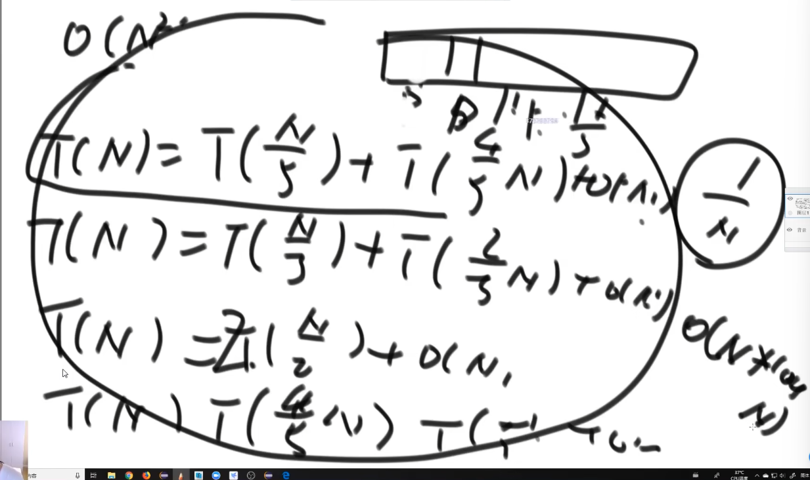
对所有的情况求时间期望:$O(N\log N)$
堆结构
堆在逻辑结构上是一个完全二叉树。也就是说，每个非叶子节点必有左节点。怎么实现呢？我们可以将天然的一维数组视作一棵完全二叉树。

我们可以使用这个公式快速找到左孩子的节点下标：(i是当前节点的下标)
类似的：
父节点：
完全二叉树的高度也可以求解：
堆在这个概念上派生：他是一个特殊的完全二叉树。大根堆中其父节点总是大于子节点，比如说

类比的：小根堆就是父节点总是小于子节点。怎么创建一个堆呢？
假设：我们有一个干净的数组，现在往数组里放数。现在，标记一下一个heapsize:他描述我们现在已经成型的堆的大小。显然刚开始heapsize一定是0！因为压根数没来呢！随着数进来，如果一个数比父节点大，那就准备交换父节点！
swap(arr[i],arr[(i-1)/2]); 如果作为上一级的子节点还是比父节点大，那不就是又要交换？是的。这就是一个递归算法。但是如果相等呢？没关系，就停在那里就好了！
public static void heapInsert(int[] arr,int index){
//不用担心0位置的问题，因为根节点的父节点还是他自己，取等依旧跳出循环
while(arr[index]>add[(index-1)/2]){
swap(arr,index,(index-1)/2);
index=(index-1)/2;
}
}
这下很容易了：arr[0]就是我们的最大值，返回出去就好了。那如果我们要把它抹掉，然后还是一个大根堆。这又如何？很简单，与最后一个数交换，或者是被覆盖。然后heapsize—.然后，我们让父节点和子节点比较。
public static void heapify(int[] arr, int index，int heapsize){
//得到左孩子下标
int left = index*2+1;
//一旦left<heapsize那显然我们的当前节点就没有孩子节点了
while(left<heapsize){
//比较两个孩子节点谁大，把大的那个下标给largest
int largest=
//万一没右孩子嘞？判断一下！
left+1<heapsize
&& arr[left+1]>arr[left]
? left+1 : left ;
//父亲和孩子之间谁大？谁大把谁的下表交给largest
largest = arr[largest] > arr[index] ? largest : index;
//如果到位了，退出循环！
if(index== largest){
break;
}
//反之，交换，继续跑路
swap(arr,largest,index);
index=largest;
left = index* 2+1;
}
} OK，现在我们的用户又抽风了，现在它随即指定一个节点变成?，那怎么怎么让他成为一个新的堆？很简单！如果变大了，只能往上走，就像上heapify,变小了那就是向下走。
算法复杂度如何？我们发现他就是遍历了树的高度：也就是说
堆排序
现在我们拿到一个数组，想要进行堆排序，就首先需要构建堆。使用heapInsert就好了。然后怎么排序？我们想到，heap总是确定最大值，只需要：最大值和最后一个值交换，在heapsize—再堆排序。这是一个逐步弹出最大值的算法排序。
import java.util.Array;
public class HeapSort{
public static void heapSort(int[] arr){
if(arr==null||arr.length<2){
return;
}
for(int i=0;i<arr.length;i++){
heapInsert(arr,i);
}
int heapsize=arr.length;
swap(arr,0,--heapsize);
while(heapSize>0){
heapify(arr,0,heapSize);
swap(arr,0,--heapsize);
}
}
} 这个算法：空间复杂度:O(1) 时间复杂度: O(nlogn)
下面是C++版本：
class Array {
public:
void Updatearray(int* arr, int size) {
int* trans = new int[size];
for (int i = 0; i < size; i++) {
trans[i] = arr[i];
}
this->array = trans;
this->arraysize = size;
}
void swap(int i1, int i2) {
int temp = array[i1];
array[i1] = array[i2];
array[i2] = temp;
}
int* getArrayDataPointer() {
return this->array;
}
int getsize()
{
return this->arraysize;
}
void printArray() {
for (int i = 0; i < arraysize; i++)
{
std::cout << array[i] << " ";
}
std::cout << std::endl;
}
private:
int* array;
int arraysize;
};
class heapSort {
public:
void heapInsert(Array a, int index) {
while (
a.getArrayDataPointer()[index]
>
a.getArrayDataPointer()[(index - 1) / 2]
)
{
a.swap(index, (index - 1) / 2);
index = (index - 1) / 2;
}
}
void heapify(Array a, int index, int heapsize) {
int left = 2 * index + 1;
while (left < heapsize) {
int largest =
left + 1 < heapsize
&&
a.getArrayDataPointer()[left + 1] > a.getArrayDataPointer()[left]
? left + 1 : left;
largest = a.getArrayDataPointer()[largest] > a.getArrayDataPointer()[index] ? largest : index;
if (index == largest)
{
break;
}
a.swap(largest, index);
index = largest;
left = index * 2 + 1;
}
}
void heapsort(Array a) {
if (a.getArrayDataPointer() == NULL || a.getsize() < 2)
{
return;
}
for (int i = 0; i < a.getsize(); i++)
heapInsert(a, i);
int heapsize = a.getsize();
a.swap(0, --heapsize);
while (heapsize > 0) {
heapify(a, 0, heapsize);
a.swap(0, --heapsize);
}
}
}; 对于几乎排好序的（向我保证在-K~K内有序）数组，我们可以使用小根堆来排序，把小数往前弹就可以了。
桶排序
这个算法跟之前的不一样，之前的算法都是基于比较的排序算法，现在介绍一个更逆天的算法：计数排序。这个算法的局限性极大：就是必须为整形，同时空间复杂度为O(N)，这样，我们得知了一个数据范围[K1,K2]，我们创造一个大小为[k2-k1+1]的数组，遇到一个数就在这个数对应的位置上+1，使用位置来衡量这个值的大小。随后，根据值来覆写数组。比如说统计到1的个数10，那就在数组里写10个1.但是，一旦数据量大起来就是寄！
现在，引入一个全新的算法：基数算法：我们首先确定数据的最大几位，对其他数字补齐0操作：如[72,100]->[072,100]就好了。然后基于个位数，创造10个桶。个位数是0的去0，1去1.。。以此类推，然后，从小到大导倒出来，随后比十位，再百位。。。以此类推
比如说：[17,13,25,100,72]->[ 017 , 013 , 025 , 100 , 072 ],然后个位入桶。再导出来
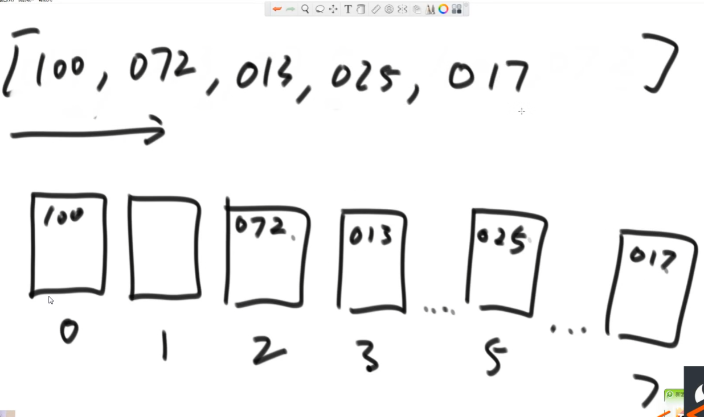
然后把这个数组再倒入桶，这次按十位数
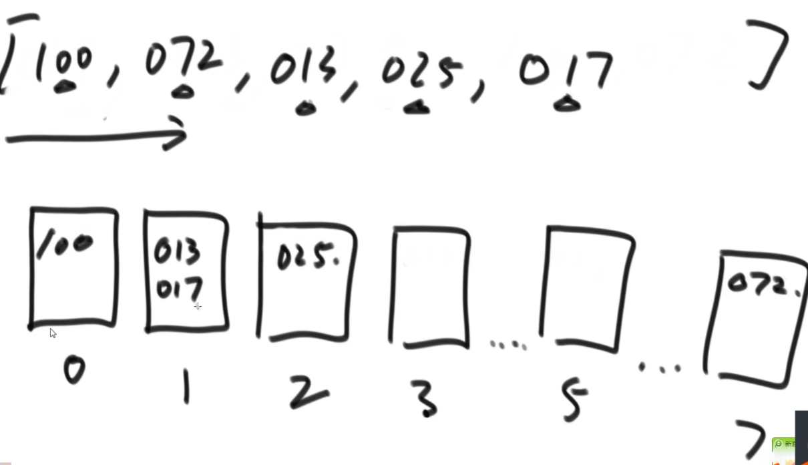
然后把这个数组再倒入桶，这次按百位数
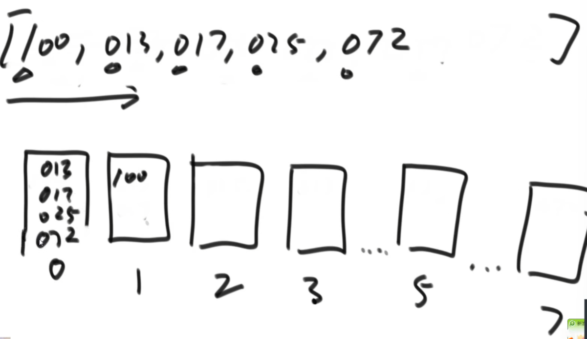
倒出来，排好序了
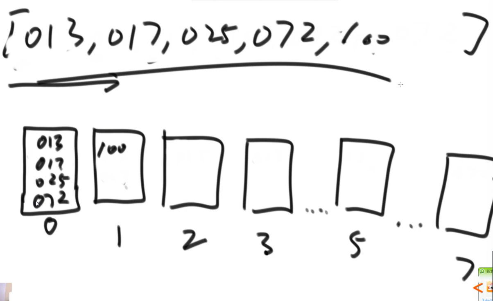
本质上，我们是按照位数排序
public class _RadixSort{
public static void radixSort(int[] arr){
if(arr==null||arr.length<2){
return;
}
radixsort(arr,0,arr.length-1,maxbits(arr));
}
//这个函数的本质是求解digit 表示最大的数有几个十进制位数
public static int maxbits(int[] arr){
int max=Interger.MIN_VALUE;
for(int i=0;i<arr.length;i++){
max=Math.max(max,arr[i]);
}
int res=0;
while(max!=0){
res++;
max/=10;
}
return res;
}
//digit 表示最大的数有几个十进制位数
public static void radixSort(int[] arr,int L ,int R,int digit)
{
final int radix=10;
int i=0,j=0;
//准备空间
int[] bucket=new int[R-L+1];
for(int d=1;d<=digit;d++)
//有多少位就进出多少次，从个位起步
{
int[] count =new int[radix];
//这个代码统计数字频率，改进后则是统计小于等于该位置数的个数
//这个count[i]表示小于等于i有count[i]个，数组代替了队列使得我们保证了后进后出
for(i=L,i<=R;i++)
{
j=getDigit(arr[i],d);
count[j]++;
}
}
for(i=1 ; i<radix;i++)
{
//改进count
count[i]=count[i]+count[i-1];
}
for(i=R;i>=L;i--)
{
//取出位数
j=getDigit(arr[i],d);
//放到辅助数组
bucket[count[j]-1]=arr[i];
//我们放置一个,就在频数上减一
count[j]--
}
//出桶
for(int i=L,j=0;i<=R;i++,j++)
{
arr[i]=bucket[j];
}
}
public static int getDigit(int x,int d)
{
return ((x/((int)Math.pow(10,d-1)))%10);
}
}